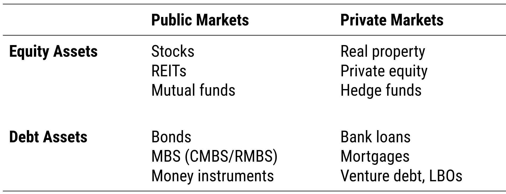

			<section data-markdown data-background-image="imgs/hk.png">
				<textarea data-template>
					##  <span class="transparent70">The goal: Create Value!</span>

					<p> &nbsp;</p>
					<p> &nbsp;</p>
					<p> &nbsp;</p>
					<p> &nbsp;</p>
					<p> &nbsp;</p>

					* <span class="transparent70">CFO can add value in two ways</span>
					* <span class="transparent70">&nbsp;&nbsp;&nbsp;1. Capital Budgeting: How to allocate the company's capital most productively?</span>
					* <span class="transparent70">&nbsp;&nbsp;&nbsp;2. Capital Structure Decisions: How to source the capital?</span>

				</textarea>
			</section>

			<section data-markdown >
				<textarea data-template>
					## Capital Budgeting <span class="subtitle"><br/>How to spend it?</span>

					* Companies invest in projects: Production / services / investments
					* The capital allocation decisions made by the firm’s managers must...
						- Meet their obligations and liabilities – e.g. pay off debt
						- Add value for the shareholders
					* Link to funding: Firm's target rate of return for projects should reflect…
						- the capital structure of the firm
						- the cost of borrowing of the firm
						- the firm’s tax position
						- shareholders’ required return
					* Shareholders’ return
						- Real Risk Free Rate + Anticipated Inflation + Risk Premium
						- Risk premium reflects risk of activities AND capital structure
				</textarea>
			</section>


			<section data-markdown >
				<textarea data-template>
					## Invest wisely <span class="subtitle"><br/>We need a decision rule!</span>

					* Consistency in decision making, to discipline middle management and allow delegation

					* Decision rule should account for
						- Cashflows from the project (including tax?)
						- Risks and uncertainties relating to those cashflows
						- All impacts, side effects and spillovers from the project
						- Opportunity costs for the firm
					* Correct application of the decision rule must
						- Ensure the projects accepted ADD value to the firm
						- Lead to rejection of projects that do NOT add value

				</textarea>
			</section>

			<section data-markdown >
				<textarea data-template>
					## NPV! <span class="subtitle"><br/>Corporate finance theory is clear: use Net Present Value!</span>

					* NPV = DCF &minus; purchase price

					$$ \small NPV = \sum_{t=1}^{\infty} \frac{CF_t}{(1+r_t)^t} -C_0$$


					* Alternative investment rules based on NPV should be consistent
						- Flow to Equity, Adjusted Present Value

				</textarea>
			</section>

			<section>
			<section data-markdown >
				<textarea data-template>
					## Decision rules <span class="subtitle"><br/>Alternatives to NPV?</span>

					* Frequently used: Internal Rate of Return (IRR)
						- Similar to NPV: IRR is the yield at which the NPV = 0
						- Gives same YES/NO result as NPV for <emph>individual</emph> projects
						- May give “wrong” decision for competing projects
						- Is technically flawed if multiple changes of sign

					* Rule of thumb methods e.g. payback, cost ratios are flawed

				</textarea>
			</section>

				<section data-markdown >
					<textarea data-template>
					## NPV for all? <span class="subtitle"><br/>RE comes in many flavours. NPV and IRR not great for optionality.</span>

					

					* Options and real options models may identify additional value over conventional NPV (more on this in session 4)

				</textarea>
				</section>
